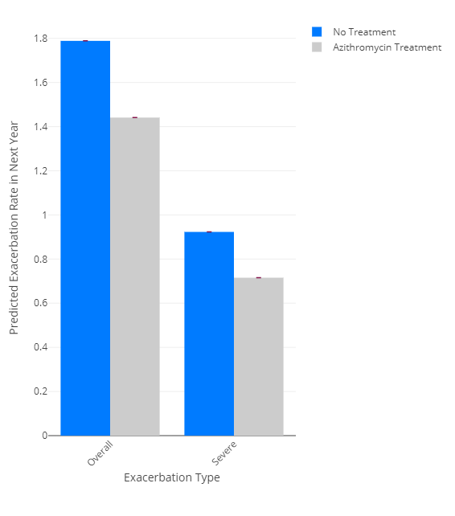
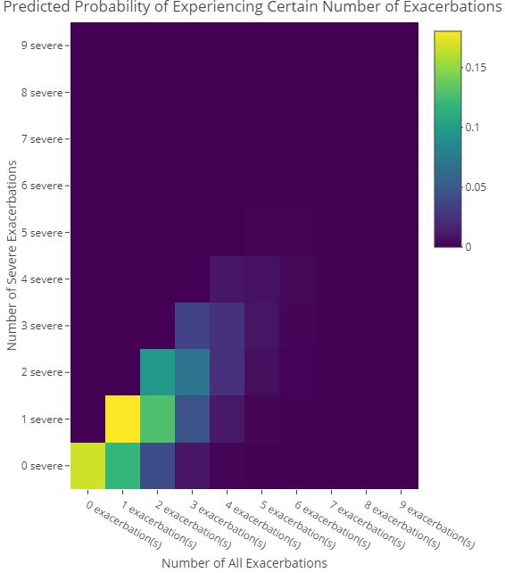
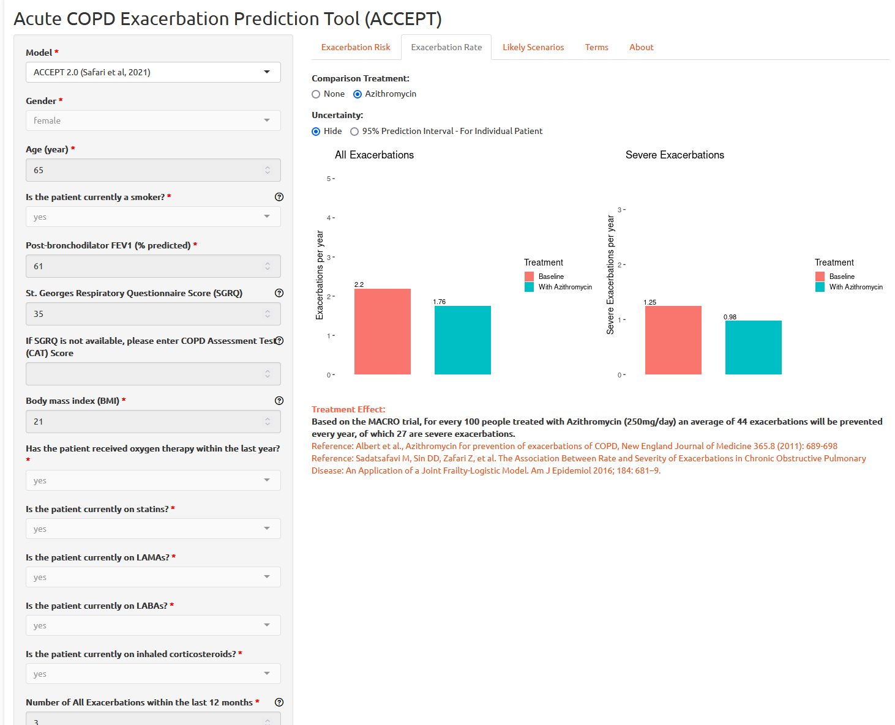

R package for the ACute COPD Exacerbation Prediction Tool (ACCEPT)
ACCEPT is a prediction model for predicting probability, rate, and severity of exacerbations (also known as lung attacks) in patients with Chronic Obstructive Pulmonary Disease.
ACCEPT has been developed by researchers at the University of British Columbia. Please refer to the published papers for more information:
Adibi A, Sin DD, Safari A, Jonhson KM, Aaron SD, FitzGerald JM, Sadatsafavi M. The Acute COPD Exacerbation Prediction Tool (ACCEPT): a modelling study. The Lancet Respiratory Medicine, Volume 8, Issue 10, 1013 - 1021; doi:10.1016/S2213-2600(19)30397-2
Safari, A., Adibi, A., Sin, D.D., Lee, T.Y., Ho, J.K., Sadatsafavi, M. and IMPACT study team, 2022. ACCEPT 2· 0: Recalibrating and externally validating the Acute COPD exacerbation prediction tool (ACCEPT). EClinicalMedicine, 51, p.101574. doi:10.1016/j.eclinm.2022.101574
The following animation explains the accept model in 90 seconds:

Installation
The latest stable version can be downloaded from CRAN:
install.packages('accept')
You can install the development version of accept from GitHub with:
# install.packages("pak")
pak::pak("resplab/accept")Usage
The function accept() provides predictions from the latest version of the accept prediction model. accept1() provides predictions of exacerbations for COPD patients per original published manuscript. accept2() is an updated version of ACCEPT that is fine tuned for improved predictions in patients who do not have a prior history of exacerbations.
Example
Exacerbation Prediction
To get a prediction for exacerbation rate, you will need to pass in a patient vector. The accept package comes with a sample patient data tibble called samplePatients:
library(accept)
accept(samplePatients) #accept uses the latest updated prediction model
#> ID male age smoker oxygen statin LAMA LABA ICS FEV1 BMI SGRQ
#> 1 10001 TRUE 70 TRUE TRUE TRUE TRUE TRUE TRUE 33 25 50
#> 2 10002 FALSE 42 FALSE TRUE FALSE TRUE TRUE FALSE 40 35 40
#> LastYrExacCount LastYrSevExacCount predicted_exac_probability
#> 1 2 1 0.8327888
#> 2 0 0 0.4366622
#> predicted_exac_probability_lower_PI predicted_exac_probability_upper_PI
#> 1 0.1929329 0.9924159
#> 2 0.0000000 0.8998712
#> predicted_exac_rate predicted_exac_rate_lower_PI predicted_exac_rate_upper_PI
#> 1 1.7884977 0.2143485 4.881703
#> 2 0.5738758 0.0000000 2.301298
#> predicted_severe_exac_probability predicted_severe_exac_probability_lower_PI
#> 1 0.6026383 0.09371195
#> 2 0.1085515 0.02547523
#> predicted_severe_exac_probability_upper_PI predicted_severe_exac_rate
#> 1 0.9575906 0.9229084
#> 2 0.4784134 0.1149076
#> predicted_severe_exac_rate_lower_PI predicted_severe_exac_rate_upper_PI
#> 1 0.09839809 3.160385
#> 2 0.02580535 0.650880
#> azithromycin_predicted_exac_probability
#> 1 0.7633086
#> 2 0.3291975
#> azithromycin_predicted_exac_probability_lower_PI
#> 1 0.1286904
#> 2 0.0000000
#> azithromycin_predicted_exac_probability_upper_PI
#> 1 0.9793698
#> 2 0.8524301
#> azithromycin_predicted_exac_rate azithromycin_predicted_exac_rate_lower_PI
#> 1 1.4409981 0.1377579
#> 2 0.3992806 0.0000000
#> azithromycin_predicted_exac_rate_upper_PI
#> 1 3.880998
#> 2 1.913453
#> azithromycin_predicted_severe_exac_probability
#> 1 0.51103045
#> 2 0.08544925
#> azithromycin_predicted_severe_exac_probability_lower_PI
#> 1 0.07570494
#> 2 0.02469734
#> azithromycin_predicted_severe_exac_probability_upper_PI
#> 1 0.9221162
#> 2 0.3567065
#> azithromycin_predicted_severe_exac_rate
#> 1 0.71545506
#> 2 0.08932232
#> azithromycin_predicted_severe_exac_rate_lower_PI
#> 1 0.07872393
#> 2 0.02500744
#> azithromycin_predicted_severe_exac_rate_upper_PI
#> 1 2.5525368
#> 2 0.4411541accept2() and accept1() functions return a more detailed dataframe with the predictions for different treatment options with measures of uncertainty.
To visualize the data, there is a graphing function called plotExacerbations(), which creates a Plotly bar graph. You have the option of selecting probability or rate for which prediction you want to see, and either CI or PI to select the confidence interval or prediction interval respectively.
results <- accept2(samplePatients[1,])
plotExacerbations(results, type="probability")
plotExacerbations(results, type="rate")

Probability of N Exacerbations (Poisson)
You can also calculate the predicted number of exacerbations in a year:
results <- accept2(samplePatients[1,])
exacerbationsMatrix <- predictCountProb(results, n = 10, shortened = TRUE)
print(exacerbationsMatrix)
#> none severe 1 severe 2 severe 3 or more severe
#> no exacerbations 0.16721119 0.00000000 0.00000000 0.00000000
#> 1 exacerbation 0.11883372 0.18022310 0.00000000 0.00000000
#> 2 exacerbations 0.04222640 0.12808103 0.09712378 0.00000000
#> 3 or more exacerbations 0.01206628 0.05851757 0.10055944 0.07102149The shortened parameter groups the probabilities from 3-10 exacerbations into one category, “3 or more exacerbations.” To see all n exacerbation probabilities:
exacerbationsMatrix <- predictCountProb(results, n = 10, shortened = FALSE)
print(exacerbationsMatrix)
#> 0 severe 1 severe 2 severe 3 severe
#> 0 exacerbation(s) 1.672112e-01 0.000000e+00 0.000000e+00 0.000000e+00
#> 1 exacerbation(s) 1.188337e-01 1.802231e-01 0.000000e+00 0.000000e+00
#> 2 exacerbation(s) 4.222640e-02 1.280810e-01 9.712378e-02 0.000000e+00
#> 3 exacerbation(s) 1.000316e-02 4.551234e-02 6.902397e-02 3.489389e-02
#> 4 exacerbation(s) 1.777262e-03 1.078158e-02 2.452699e-02 2.479841e-02
#> 5 exacerbation(s) 2.526131e-04 1.915564e-03 5.810285e-03 8.811872e-03
#> 6 exacerbation(s) 2.992120e-05 2.722708e-04 1.032314e-03 2.087475e-03
#> 7 exacerbation(s) 3.037773e-06 3.224959e-05 1.467291e-04 3.708819e-04
#> 8 exacerbation(s) 2.698608e-07 3.274164e-06 1.737958e-05 5.271571e-05
#> 9 exacerbation(s) 2.130942e-08 2.908606e-07 1.764475e-06 6.244004e-06
#> 4 severe 5 severe 6 severe 7 severe
#> 0 exacerbation(s) 0.000000e+00 0.000000e+00 0.000000e+00 0.000000e+00
#> 1 exacerbation(s) 0.000000e+00 0.000000e+00 0.000000e+00 0.000000e+00
#> 2 exacerbation(s) 0.000000e+00 0.000000e+00 0.000000e+00 0.000000e+00
#> 3 exacerbation(s) 0.000000e+00 0.000000e+00 0.000000e+00 0.000000e+00
#> 4 exacerbation(s) 9.402310e-03 0.000000e+00 0.000000e+00 0.000000e+00
#> 5 exacerbation(s) 6.682038e-03 2.026794e-03 0.000000e+00 0.000000e+00
#> 6 exacerbation(s) 2.374397e-03 1.440403e-03 3.640856e-04 0.000000e+00
#> 7 exacerbation(s) 5.624791e-04 5.118332e-04 2.587485e-04 5.605968e-05
#> 8 exacerbation(s) 9.993573e-05 1.212499e-04 9.194377e-05 3.984052e-05
#> 9 exacerbation(s) 1.420447e-05 2.154249e-05 2.178088e-05 1.415694e-05
#> 8 severe 9 severe
#> 0 exacerbation(s) 0.000000e+00 0.000000e+00
#> 1 exacerbation(s) 0.000000e+00 0.000000e+00
#> 2 exacerbation(s) 0.000000e+00 0.000000e+00
#> 3 exacerbation(s) 0.000000e+00 0.000000e+00
#> 4 exacerbation(s) 0.000000e+00 0.000000e+00
#> 5 exacerbation(s) 0.000000e+00 0.000000e+00
#> 6 exacerbation(s) 0.000000e+00 0.000000e+00
#> 7 exacerbation(s) 0.000000e+00 0.000000e+00
#> 8 exacerbation(s) 7.552761e-06 0.000000e+00
#> 9 exacerbation(s) 5.367600e-06 9.044996e-07To visualize the matrix as a heatmap, we can use the function plotHeatMap:
plotHeatMap(results, shortened = FALSE)
Web App for ACCEPT
ACCEPT is also available as web app, accessible at http://resp.core.ubc.ca/ipress/accept

API using vetiver and plumber
You can use vetiver and plumber packages to create, deploy, and monitor an API for ACCEPT:
library(vetiver)
v_accept <- vetiver_model(accept,
"accept-model")To test to API locally, you can use
library(plumber)
pr() |>
vetiver_api(v_accept) |>
pr_run()Cloud-based API Access through Peer Models Network
The Peer Models Network allows users to access ACCEPT through the cloud. A MACRO-enabled Excel-file can be used to interact with the model and see the results. To download the PRISM Excel template file for ACCEPT, please refer to the Peer Models Network model repository.
Python
import json
import requests
url = 'https://prism.peermodelsnetwork.com/route/accept/run'
headers = {'x-prism-auth-user': YOUR_API_KEY}
model_run = requests.post(url, headers=headers,
json = {"func":["prism_model_run"],"model_input":[{"ID": "10001","male": 1,"age": 57,"smoker": 0,"oxygen": 0,"statin": 0,"LAMA": 1,"LABA": 1,"ICS": 1,"FEV1": 51,"BMI": 18,"SGRQ": 63,"LastYrExacCount": 2,"LastYrSevExacCount": 1,"randomized_azithromycin": 0,"randomized_statin": 0,"randomized_LAMA": 0,"randomized_LABA": 0,"randomized_ICS": 0, "random_sampling_N" : 100, "calculate_CIs" : "TRUE"}]})
print(model_run)
results = json.loads(model_run.text)
print(results)Linux Bash
In Ubuntu, you can call the API with curl:
curl \
-X POST \
-H "x-prism-auth-user: REPLACE_WITH_API_KEY" \
-H "Content-Type: application/json" \
-d '{"func":["prism_model_run"],"model_input":[{"ID": "10001","male": 1,"age": 57,"smoker": 0,"oxygen": 0,"statin": 0,"LAMA": 1,"LABA": 1,"ICS": 1,"FEV1": 51,"BMI": 18,"SGRQ": 63,"LastYrExacCount": 2,"LastYrSevExacCount": 1,"randomized_azithromycin": 0,"randomized_statin": 0,"randomized_LAMA": 0,"randomized_LABA": 0,"randomized_ICS": 0, "random_sampling_N" : 100,
"calculate_CIs" : "TRUE"}]}' \
https://prism.peermodelsnetwork.com/route/accept/runCitation
Please cite:
Adibi A, Sin DD, Safari A, Jonhson KM, Aaron SD, FitzGerald JM, Sadatsafavi M. The Acute COPD Exacerbation Prediction Tool (ACCEPT): a modelling study. The Lancet Respiratory Medicine. Volume 8, Issue 10, 1013 - 1021 doi:10.1016/S2213-2600(19)30397-2
Safari, A., Adibi, A., Sin, D.D., Lee, T.Y., Ho, J.K., Sadatsafavi, M. and IMPACT study team, 2022. ACCEPT 2· 0: Recalibrating and externally validating the Acute COPD exacerbation prediction tool (ACCEPT). EClinicalMedicine, 51, p.101574. doi:10.1016/j.eclinm.2022.101574